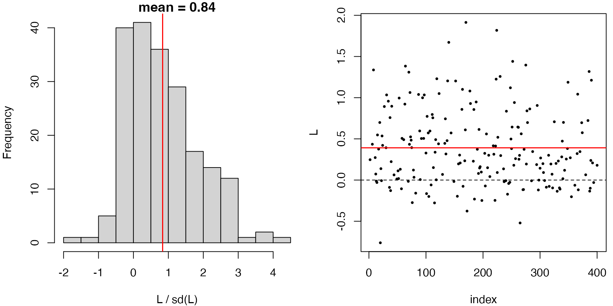
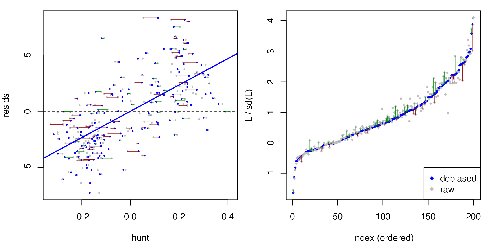
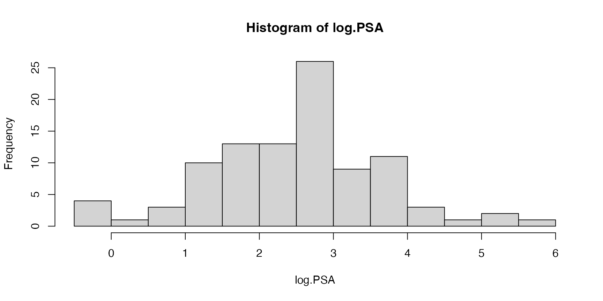
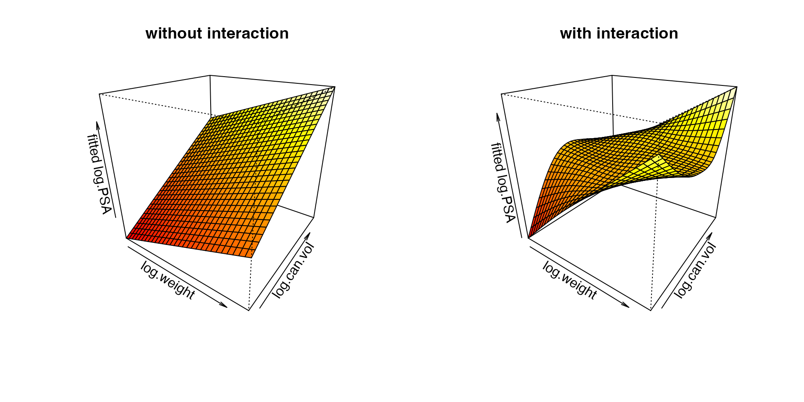
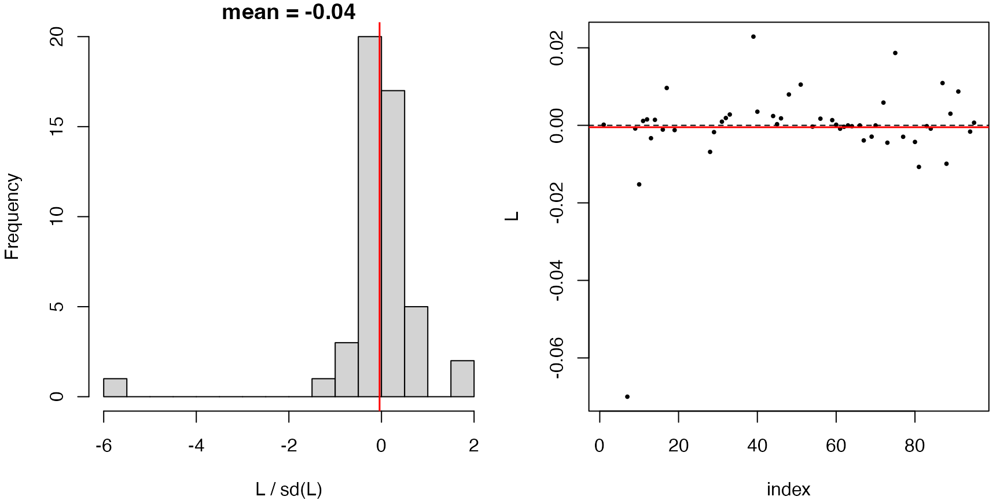
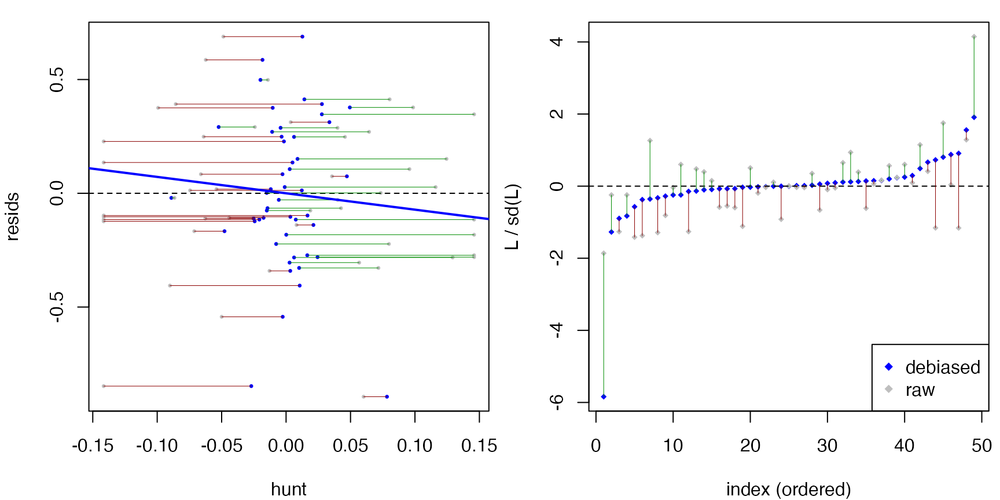

library(dScoreTest)
library(mgcv)This article walks through gof_test() and
compare_models() on mgcv::gam fits. Because
these examples lean on grf and refit GAMs across sample
splits, they are slower than the package vignette — this is a web-only
article (not run by R CMD check).
Simulation example
We simulate from the four-term additive truth in
mgcv::gamSim(eg = 1),
where
and
are nonlinear. The covariates are independent uniforms.
Goodness of fit
gof_test() checks the functional form of a
fitted model against a nonparametric alternative built with a regression
forest. A correctly specified additive smooth model is not rejected:
fit.smooth <- gam(y ~ s(x0) + s(x1) + s(x2) + s(x3), data = dat)
gof_test(fit.smooth)
#> Debiased score test:
#> y ~ X, with X consists of x0, x1, x2, x3.
#> (hunt.style = optimal, hunt.method = grf)
#> n = 400, two-way split: hunt = 200, debias & test = 200
#>
#> T = 0.6274, p-value = 0.265214Formally, the above tests that the regression function is an additive function of . In contrast, if we specify that the regression function is a linear function of , the model is rejected.
fit.linear <- lm(y ~ x0 + x1 + x2 + x3, data = dat)
gof_test(fit.linear)
#> Debiased score test:
#> y ~ X, with X consists of (Intercept), x0, x1, x2, x3.
#> (hunt.style = optimal, hunt.method = grf)
#> n = 400, two-way split: hunt = 200, debias & test = 200
#>
#> T = 9.7238, p-value = 1.19302e-22In fact, since
in the data-generating mechanism, an additive regression model without
s(x3) is still well-specified.
fit.drop3 <- gam(y ~ s(x0) + s(x1) + s(x2), data = dat)
gof_test(fit.drop3) # f3 = 0, still well-specified given (x0, x1, x2)
#> Debiased score test:
#> y ~ X, with X consists of x0, x1, x2.
#> (hunt.style = optimal, hunt.method = grf)
#> n = 400, two-way split: hunt = 200, debias & test = 200
#>
#> T = -2.3486, p-value = 0.990578Note: gof_test should
not be used for testing significance of a predictor, as
illustrated below.
fit.drop23 <- gam(y ~ s(x0) + s(x1), data=dat)
gof_test(fit.drop23)
#> Debiased score test:
#> y ~ X, with X consists of x0, x1.
#> (hunt.style = optimal, hunt.method = grf)
#> n = 400, two-way split: hunt = 200, debias & test = 200
#>
#> T = -0.4014, p-value = 0.655919Since the model is only fitted on x0 and
x1, the above tests
as opposed to
simply because gof_test does not see predictors
x_1 and x_2 which do not appear in the model’s
formula (you can see this from the printout
y ~ X, with X consists of x0, x1). To ask whether one or
more omitted covariates carries signal, use
compare_models(), which gives the hunt access to the
alternative’s covariates.
Model comparison
compare_models() tests a null model against a larger
alternative model and detects signal living in the alternative’s extra
terms. Similar to ANOVA, this can be used to test significance of one or
more predictors. For example, we can test the significance of
by fitting a model without s(x2) and comparing it against
the full model.
fit.full <- gam(y ~ s(x0) + s(x1) + s(x2) + s(x3), data = dat)
res <- compare_models(fit.drop23, fit.full)
res
#> Debiased score test:
#> y ~ X, with X consists of x0, x1, x2, x3.
#> (hunt.style = optimal, hunt.method = gam)
#> n = 400, two-way split: hunt = 200, debias & test = 200
#>
#> T = 11.8263, p-value = 1.42765e-32This p-value correctly measures the significance of predictors
x2, x3.
Diagnostics
plot() on a dScoreTest object shows
diagnostic panels. For a rejected test, the hunted direction
h lines up with the residuals, so
L = resids * h has a clearly non-zero mean. Indeed, we see
a large positive slope in the ‘resids vs hunt’ plot below.
plot(res)

summary() adds a raw-vs-debiased comparison of the
statistic, so you can see how much the outer orthogonalization step
moved it:
summary(res)
#> Debiased score test
#> (hunt.style = optimal, hunt.method = gam)
#> n = 400, two-way split: hunt = 200, debias & test = 200
#>
#> Debiased: T = 11.8263, p = 1.42765e-32
#> Raw: T = 12.2269, p = 1.11664e-34 (may contain bias)
#>
#> L = resids * h (debiased):
#> Min. 1st Qu. Median Mean 3rd Qu. Max.
#> -0.76145 0.01556 0.30110 0.39152 0.69664 1.91380
#>
#> L.raw = resids * h.raw:
#> Min. 1st Qu. Median Mean 3rd Qu. Max.
#> -0.69498 0.02234 0.31879 0.39152 0.66576 1.85184
#>
#> h (debiased hunted direction):
#> Min. 1st Qu. Median Mean 3rd Qu. Max.
#> -0.31512 -0.15726 -0.04016 0.00000 0.17892 0.38897
#>
#> h.raw (before outer debias):
#> Min. 1st Qu. Median Mean 3rd Qu. Max.
#> -0.328412 -0.171114 -0.045389 -0.009752 0.174042 0.410749
#>
#> resids (score residuals on test):
#> Min. 1st Qu. Median Mean 3rd Qu. Max.
#> -7.2341 -2.4313 -0.2759 0.0000 1.9564 8.2962Hunt styles
All three hunts are available for GAMs. The optimal hunt is the default; the WLS hunt is simpler and sometimes nearly as powerful:
compare_models(fit.drop23, fit.full, hunt.style = "optimal")
#> Debiased score test:
#> y ~ X, with X consists of x0, x1, x2, x3.
#> (hunt.style = optimal, hunt.method = gam)
#> n = 400, two-way split: hunt = 200, debias & test = 200
#>
#> T = 10.0491, p-value = 4.63434e-24
compare_models(fit.drop23, fit.full, hunt.style = "wls")
#> Debiased score test:
#> y ~ X, with X consists of x0, x1, x2, x3.
#> (hunt.style = wls, hunt.method = gam)
#> n = 400, two-way split: hunt = 200, debias & test = 200
#>
#> T = 10.1919, p-value = 1.07797e-24Example with prostate cancer data
In this section, we follow Wakefield (Bayesian and Frequentist Regression Methods, §12) to fit GAMs for analyzing the prostate cancer data in Stamey et al. (1989) and Tibshirani (1996).
prostate <- read.table(
"https://hastie.su.domains/ElemStatLearn/datasets/prostate.data",
header = TRUE)
prostate$train <- NULL
colnames(prostate)[c(1, 2, 4, 6, 9)] <-
c("log.can.vol", "log.weight", "log.BPH", "log.cap.pen", "log.PSA")
head(prostate)
#> log.can.vol log.weight age log.BPH svi log.cap.pen gleason pgg45 log.PSA
#> 1 -0.5798185 2.769459 50 -1.386294 0 -1.386294 6 0 -0.4307829
#> 2 -0.9942523 3.319626 58 -1.386294 0 -1.386294 6 0 -0.1625189
#> 3 -0.5108256 2.691243 74 -1.386294 0 -1.386294 7 20 -0.1625189
#> 4 -1.2039728 3.282789 58 -1.386294 0 -1.386294 6 0 -0.1625189
#> 5 0.7514161 3.432373 62 -1.386294 0 -1.386294 6 0 0.3715636
#> 6 -1.0498221 3.228826 50 -1.386294 0 -1.386294 6 0 0.7654678We want to use data to model the continuous outcome variable
log.PSA, the log of prostate specific antigen (PSA), which
is a biomarker to predict the clinical stage of cancer.

The dataset also measures the following covariates:
-
log.can.vol: log of cancer volume (cc), from the digitized tumor area times a thickness. -
log.weight: log of the prostate weight (grams). -
age: age of the patient (years). -
log.BPH: log amount of benign prostatic hyperplasia, a noncancerous enlargement of the gland, as an area (cm²). -
svi: seminal vesicle invasion, a 0/1 indicator of whether cancer cells have invaded the seminal vesicle. -
log.cap.pen: log capsular penetration, the linear extent (cm) of cancer extending into the prostate capsule. -
gleason: the Gleason score, a measure of tumor aggressiveness. Each of the two largest cancer areas is graded 1–5 (5 most aggressive) and the two grades are summed. -
pgg45: the percentage of Gleason scores that are 4 or 5.
In particular, we want to model and visualize how
log.PSA varies according to log.can.vol and
log.weight, while accounting for other covariates. We fit a
GAM model with penalized regression splines on each covariate, except
for factors svi and gleason, which are
introduced as simple linear terms. In particular, we fit two models for
the joint effect of log cancer volume and log weight: one
additive (no interaction) and one that adds a
tensor-product interaction between them. Writing the
bivariate part as ti() main effects plus a
ti() interaction is the functional-ANOVA decomposition, so
the interaction term captures only the interaction.
fit.0 <- gam(log.PSA ~ ti(log.can.vol, k = 6) + ti(log.weight, k = 6) +
s(age, k = 7, bs = "cr") +
s(log.BPH, k = 7, bs = "cr") +
s(log.cap.pen, k = 7, bs = "cr") +
s(pgg45, k = 7, bs = "cr") +
svi + gleason,
data = prostate, method = "GCV.Cp")
fit.1 <- gam(log.PSA ~ ti(log.can.vol, k = 6) + ti(log.weight, k = 6) +
ti(log.can.vol, log.weight, k = c(6, 6)) + # interaction
s(age, k = 7, bs = "cr") +
s(log.BPH, k = 7, bs = "cr") +
s(log.cap.pen, k = 7, bs = "cr") +
s(pgg45, k = 7, bs = "cr") +
svi + gleason,
data = prostate, method = "GCV.Cp")The two fitted surfaces are visualized as follows.
par(mfrow = c(1, 2))
vis.gam(fit.0, view = c("log.weight", "log.can.vol"), theta = 35, phi = 25,
zlab = "fitted log.PSA", main = "without interaction")
vis.gam(fit.1, view = c("log.weight", "log.can.vol"), theta = 35, phi = 25,
zlab = "fitted log.PSA", main = "with interaction")
Is the interaction model adequate?
Before testing the interaction, check that the model with interaction is itself well-specified:
set.seed(42)
gof.1 <- gof_test(fit.1)
gof.1
#> Debiased score test:
#> y ~ X, with X consists of svi, gleason, log.can.vol, log.weight, age, log.BPH, log.cap.pen, pgg45.
#> (hunt.style = optimal, hunt.method = grf)
#> n = 97, two-way split: hunt = 48, debias & test = 49
#>
#> T = -0.2882, p-value = 0.613421
plot(gof.1)

There is no indication of misspecification.
Testing for the interaction
compare_models() tests the additive null
fit.0 against the interaction alternative
fit.1:
set.seed(42)
compare_models(fit.0, fit.1)
#> Debiased score test:
#> y ~ X, with X consists of svi, gleason, log.can.vol, log.weight, age, log.BPH, log.cap.pen, pgg45.
#> (hunt.style = optimal, hunt.method = gam)
#> n = 97, two-way split: hunt = 48, debias & test = 49
#>
#> T = -1.5025, p-value = 0.933513For comparison, mgcv’s own approximate significance test
for the interaction term ti(log.can.vol,log.weight) is
borderline significant.
summary(fit.1)$s.table
#> edf Ref.df F p-value
#> ti(log.can.vol) 1.703735 2.105484 15.045410 2.986785e-06
#> ti(log.weight) 1.000000 1.000000 11.902001 9.354714e-04
#> ti(log.can.vol,log.weight) 6.425780 8.669048 2.566460 1.553072e-02
#> s(age) 3.408446 4.140520 2.469979 4.903984e-02
#> s(log.BPH) 1.000000 1.000000 5.313203 2.400945e-02
#> s(log.cap.pen) 3.735876 4.332359 1.747032 1.315853e-01
#> s(pgg45) 3.592971 4.312329 1.863861 9.226700e-02Stabilizing across sample splits
With only 97 observations, a single debiased score test is sensitive to the random hunt/test split. Re-running it gives a spread of p-values:
set.seed(42)
replicate(10, compare_models(fit.0, fit.1)$p.val)
#> [1] 0.93351306 0.06498306 0.52083874 0.28062263 0.95045012 0.95609299
#> [7] 0.67061718 0.31334265 0.76105070 0.01090328A practical remedy is to aggregate over many splits with a heavy-tailed combination test, which is robust to the strong dependence between splits (cf. the harmonic-mean p-value of Wilson, 2019):
set.seed(42)
pvals <- replicate(200, compare_models(fit.0, fit.1)$p.val)
1 / mean(1 / pvals) # harmonic-mean p-value
#> [1] 0.01681002The aggregated p-value seems to agree with the mgcv’s result.